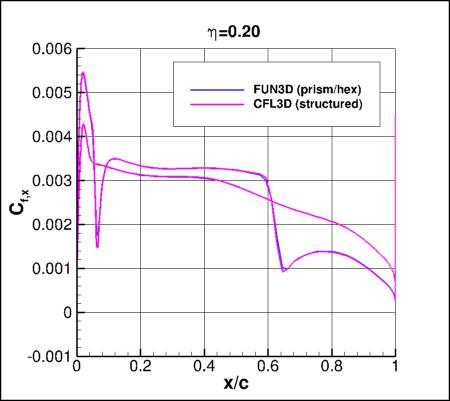
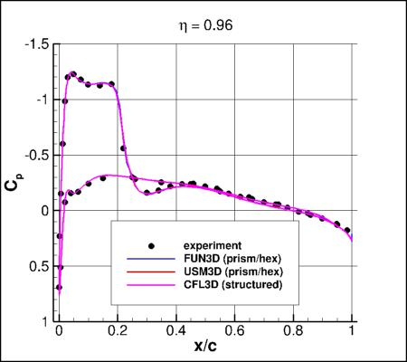

Return to: 3D ONERA M6 Validation for Numerical Analysis Intro Page
Return to: Turbulence Modeling Resource Home Page
TURBULENCE MODEL NUMERICAL ANALYSIS
3D ONERA M6 Wing Validation
SA-neg Model Results
Link to SA-neg equations
Preliminary results are shown for the 3D ONERA M6 wing,
for the SA-neg variant of the SA model.
Note that SA-neg is passive to the
original (SA) model in well-resolved flowfields, and hence is expected to yield essentially identical
results as SA for the cases here.
For all results, the farfield value of the Spalart turbulence variable is
 .
In all codes the Prandtl number Pr is taken to be constant at 0.72, and turbulent Prandtl
number Prt is taken to be constant at 0.9.
The dynamic viscosity is computed using
Sutherland's Law (See White, F. M., "Viscous Fluid Flow," McGraw Hill, New York, 1974, p. 28).
In Sutherland's Law, the local value of dynamic viscosity is determined by plugging the local value of temperature
(T) into the following formula:
.
In all codes the Prandtl number Pr is taken to be constant at 0.72, and turbulent Prandtl
number Prt is taken to be constant at 0.9.
The dynamic viscosity is computed using
Sutherland's Law (See White, F. M., "Viscous Fluid Flow," McGraw Hill, New York, 1974, p. 28).
In Sutherland's Law, the local value of dynamic viscosity is determined by plugging the local value of temperature
(T) into the following formula:

where
 ,
,
 , and
, and
 .
The same formula can be found online
(with temperature constants given in degrees K and some small conversion differences).
Note that in terms of the reference quantities for this particular case, Sutherland's Law can equivalently be written:
.
The same formula can be found online
(with temperature constants given in degrees K and some small conversion differences).
Note that in terms of the reference quantities for this particular case, Sutherland's Law can equivalently be written:

where
 is the reference dynamic viscosity that corresponds to the freestream in this case, and
freestream
is the reference dynamic viscosity that corresponds to the freestream in this case, and
freestream  is 540R. This latter form may be more convenient for nondimensional codes.
(Specific details regarding an implementation of Sutherland's Law in nondimensional codes can be found in
handwritten notes describing Sutherland's Law in CFL3D and FUN3D.)
is 540R. This latter form may be more convenient for nondimensional codes.
(Specific details regarding an implementation of Sutherland's Law in nondimensional codes can be found in
handwritten notes describing Sutherland's Law in CFL3D and FUN3D.)
The results on this page have been reported in AIAA Paper 2018-1102,
https://doi.org/10.2514/6.2018-1102. Also, many of the other papers from two special
sessions at AIAA SciTech 2018 dealt with this case: see AIAA Papers 2018-1101 through 1104, and AIAA Papers 2018-1566 through 1570.
Case 2308, AoA=3.06 deg: Grid Convergence Behavior of Forces, Moment, and Maximum Eddy Viscosity
Plots are shown to illustrate grid convergence for the lift, drag,
moment coefficient, and nondimensional maximum eddy viscosity for the ONERA M6 AoA=3.06 deg case.
(Note: the moment is about the y-moment center.)
The contributions to the drag coefficient due to the viscosity and pressure are also
presented separately.
For forces and moment, results from 4 different codes (on different versions of the grids) appear
to be approaching nearly the same results as the grid is refined
(i.e., as h approaches zero). CFL3D is a structured-grid code, while all others are
unstructured-grid codes.
For eddy viscosity, it is not as clear that all results are approaching the same answer;
finer grids are likely required.
Recall that all codes were run using SA-neg.
Results that generated the above plots can be found in the following data
file:
combined_forces_pitchmom_maxmut.dat.
Case 2308, AoA=3.06 deg: Surface Pressure and Skin Friction Coefficients
First, plots are shown to illustrate differences between three different CFD codes on the finest L1 grids
(experimental data are also included for comparison).
The "eta" refers to the span station (0=root, 1=tip), and the x-locations are nondimensionalized by local chord.




The following plots show grid convergence behavior of upper surface pressure coefficients and x-component
of skin friction for individual codes (not available for USM3D yet), for eta=0.20, 0.80, and 0.99.
The following plots show grid convergence behavior of upper surface pressure coefficients near the trailing edge
for each code, for eta=0.20.
The following plots show grid convergence behavior of upper surface pressure coefficients near the minimum Cp location
for each code, for eta=0.20.
The following plots show grid convergence behavior of upper surface pressure coefficients near the shock intersection location
for each code, for eta=0.80.
The following plots show grid convergence behavior of upper surface pressure coefficients near the trailing edge
for each code, for eta=0.99.
The following plots show grid convergence behavior of upper surface pressure coefficients near the minimum Cp location
for each code, for eta=0.99.
Results that generated the above plots can be found in the following data
files:
FUN3D_OM6_A3p06_CPCF.dat,
USM3D_OM6_A3p06_CP.dat,
CFL3D_OM6_A3p06_CPCF.dat.
Sample input files are available for FUN3D and CFL3D:
fun3d.nml_OM6_L2MIXcorrected,
cfl3d_OM6sampleinput_L2.inp.
(Note: it was discovered after-the-fact that FUN3D,FV was mistakenly
run with conditions slightly different than
those specified for this case. It used: reynolds_number=14.623131633937641e6, temperature=536R,
area_reference=1.159316400000000, x_moment_length=0.801469910371319, y_moment_length=1.4844.
However, these differences are believed to be small enough that the results, to plotting
accuracy, would be very close. The incorrect values have been corrected in the input
file provided here.)
Return to: 3D ONERA M6 Validation for Numerical Analysis Intro Page
Return to: Turbulence Modeling Resource Home Page
Recent significant updates:
04/17/2019 - added sample input files for FUN3D and CFL3D
06/22/2018 - added skin friction results from FUN3D and CFL3D
Page Curators: Christopher Rumsey,
Ethan Vogel,
Clark Pederson
Last Updated: 11/10/2021